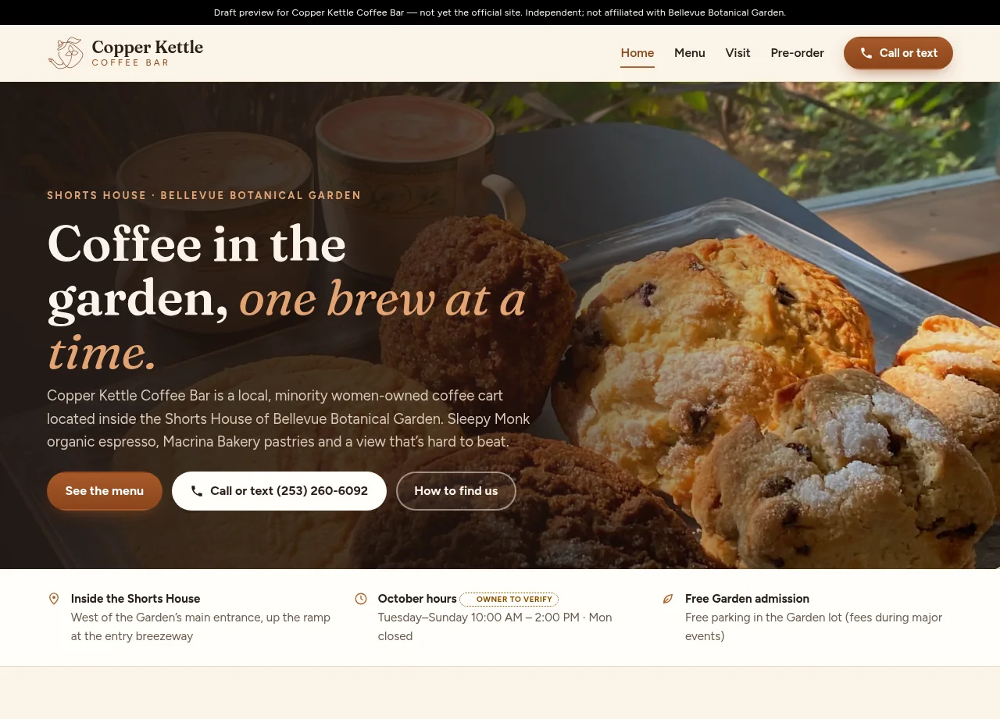

01 / Problem
The product challenge
With the cart’s domain expired, people looking for it lost both the site and Square ordering. They still needed the Shorts House location, hours, prices, and a way to reach the cart.
Cafe / Visit / Pre-order
A sample site for a coffee cart in the Shorts House at Bellevue Botanical Garden. The cart’s own domain had expired, and Square online ordering broke with it. Visit info and menu prices come from the cart’s own sources, with no Garden branding.

The experience at a glance
The page leads with where the cart sits, how to call or text, and a path into the menu. It stays independent of Bellevue Botanical Garden.
Visit the preview ↗This case study describes a draft pitch preview and the design decisions visible in that preview. It is not the business’s official site, and it does not claim the business hired this work or published it on their domain.
01 / Problem
With the cart’s domain expired, people looking for it lost both the site and Square ordering. They still needed the Shorts House location, hours, prices, and a way to reach the cart.
02 / Design intent
A visit-first page: find the cart, read the menu, then call, text, or pre-order. The page does not borrow Garden logos or present itself as a Garden site.
03 / Key decisions
04 / Interaction & usability
Menu, Visit, and Pre-order are separate header destinations, so a garden visitor can jump to directions or the drink list. The phone number stays in the header.
05 / Tools & skills
Wayfinding, content hierarchy, cafe menu layout, responsive design, and front-end implementation.
06 / What I’d improve next
If ordering comes back, the same visit-first page can point at a working pre-order step without turning the cart into a Garden brand.
Open the preview ↗Next project / Let’s work together